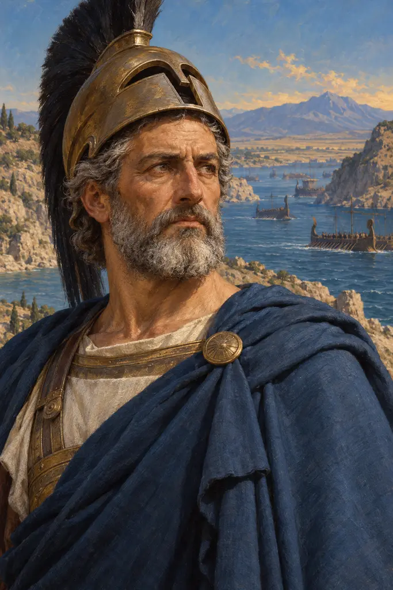
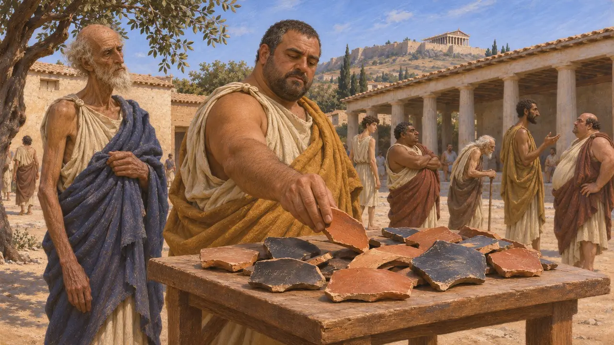
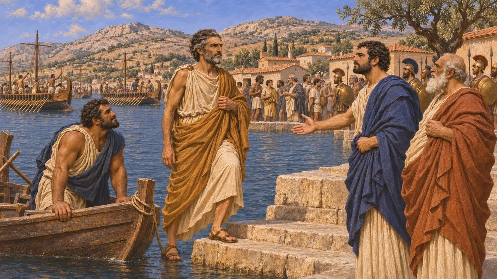
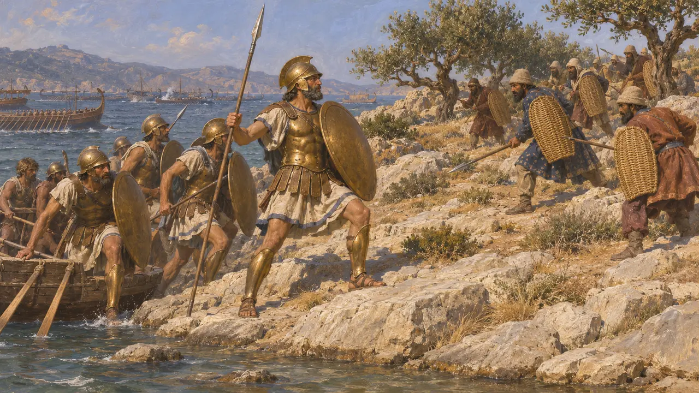
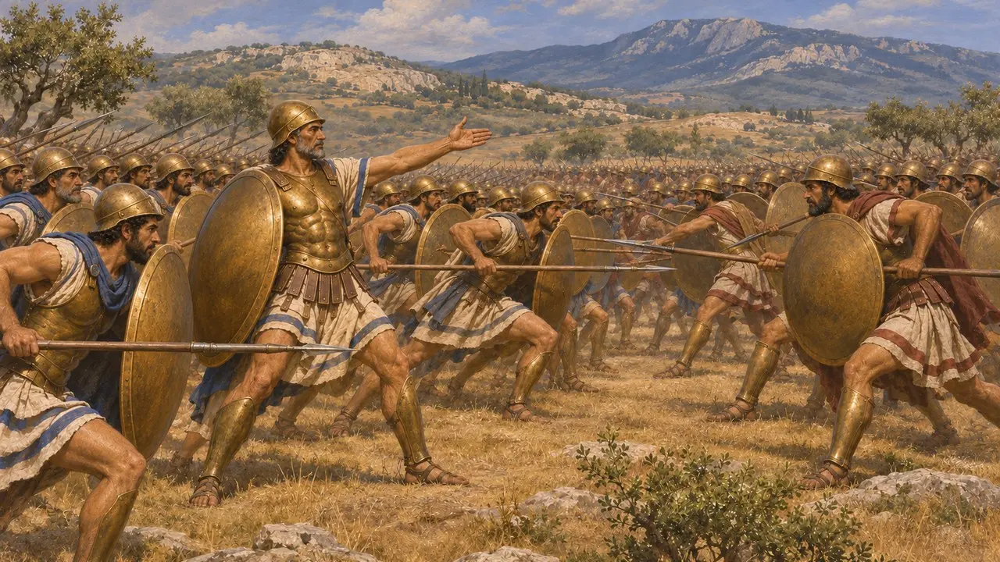
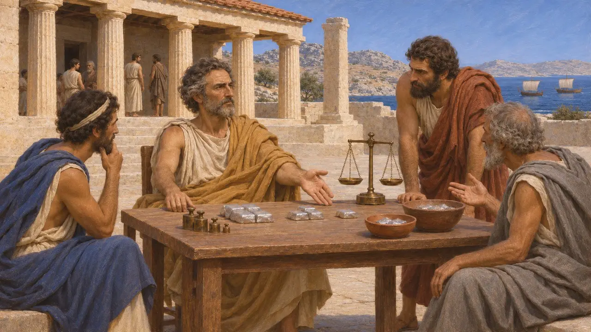
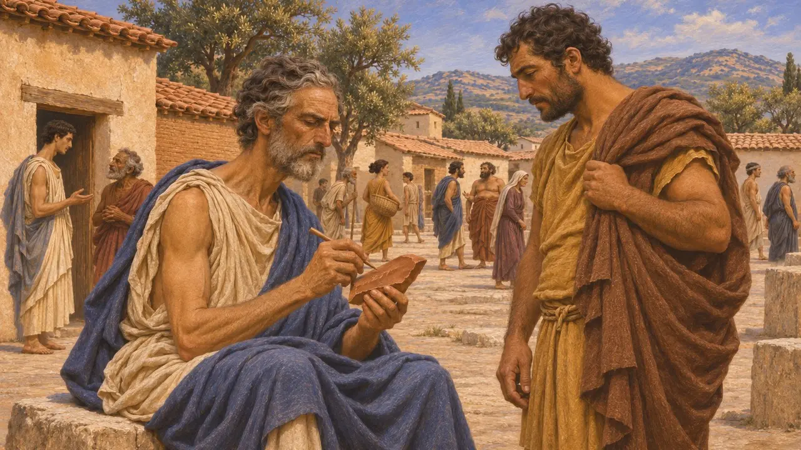

آریستیدس
دولتمرد و سپهبد آتنی، ملقب به «دادگر»، درگذشته در حدود 467 پ.م.
آریستیدس پسر لوسیماخوس، سیاستمدار و سپهبد آتنی بود که با لقب «دادگر» در یادها مانده است. در دههٔ 480 با اُستراکیسم تبعید شد، اما با یورش خشایارشا بازخوانده شد، در سالامیس جنگید و در سال 479 فرماندهی آتنیان را در پلاته بر عهده داشت. سپس نخستین باج اتحاد تازهٔ یونانیان در برابر پارس را تعیین کرد.
در بازی: یادداشت گاهنامهٔ بازی آریستیدس را رهبر هشت هزار آتنی در جناح چپ یونانیان در پلاته و رویاروی تبیها معرفی میکند. هرودوت با این همداستان است، هرچند میگوید آنان با همهٔ بئوتیاییان روبهرو بودند و تبیها سرسختانهتر از همه جنگیدند.

اُستراکاهایی با نام او
در اسناداُستراکیسم به شهروندان آتنی اجازه میداد با خراشیدن نام مردی سرشناس بر سفالپارهای، به تبعید دهسالهٔ او رأی دهند. کاوشگران در آگورای آتن و کرامیکوس اُستراکاهایی یافتهاند که نام آریستیدس پسر لوسیماخوس بر آنهاست. این سفالپارهها احتمالاً از رأیگیریهای دههٔ 480 بازماندهاند، روزگاری که او و تمیستوکلس رقیب یکدیگر بودند.
M. Lang, Ostraka (The Athenian Agora 25), 1990; Kerameikos excavation publications

تبعید و فراخوانی
روایت باستانی«اصول حکومت آتن»، منسوب به ارسطو، تبعید او با اُستراسیسم را در حدود سال 482 میداند؛ همان زمانی که تمیستوکلس آتنیان را بر آن میداشت تا نقرهٔ تازهیافتهٔ خود را صرف ساختن ناوگان کنند. این اثر میافزاید که آتنیان حدود دو سال بعد، هنگام نزدیک شدن سپاه خشایارشا، همهٔ تبعیدشدگان را فراخواندند. هرودوت نیز میگوید آریستیدس پیش از بازگشتش در سال 480 تبعید شده بود.
Aristotle (attrib.), Constitution of the Athenians 22; Herodotus 8.79

سالامیس و پسوتالیا
روایت باستانیهرودوت میگوید آریستیدس در شب پیش از نبرد از اگینا به سالامیس آمد و به تمیستوکلس خبر داد که ناوگان پارسی یونانیان را در میان گرفته است. هرودوت او را بهترین و درستکارترین مرد آتن میخواند. در جریان نبرد، آریستیدس هوپلیتهای آتنی را در جزیرهٔ کوچک پسوتالیا پیاده کرد و سپاهیان پارسی مستقر در آنجا را کشت.
Herodotus 8.79-81, 8.95

فرمانده در پلاته
روایت باستانیدر 479 پ.م. آریستیدس هشت هزار آتنی را در جناح چپ صف یونانیان رهبری کرد. هرودوت میگوید پاوسانیاس زمانی پیشنهاد کرد که آتنیان جناح خود را با اسپارتیان جابهجا کنند تا رویاروی پارسیان قرار گیرند، اما این جابهجایی بازگردانده شد. در نبرد واپسین، آتنیان با بئوتیاییان جنگیدند که در میانشان تبیها سرسختانهتر از همه برای مردونیه میجنگیدند.
Herodotus 9.28, 9.46-47, 9.67

باج آریستیدس
مورد مناقشهپس از 478، متحدان یونانی اتحادیهای در برابر پارس پدید آوردند و رسالهٔ «قانون اساسی آتنیان» میگوید آریستیدس سهمی را که هر عضو میبایست بپردازد تعیین کرد. توسیدید به باجی اشاره میکند که در روزگار خود او مقرر شده بود و نخستین جمع آن را 460 تالان میآورد. تاریخنگاران دربارهٔ درستی این رقم برای سال نخست اختلاف نظر دارند. همچنین بحث میکنند که این تعیین سهم تا چه اندازه از باج پارسیای پیروی میکرد که ارتافرنس پس از شورش شهرهای ایونیه برای آنها مقرر کرده بود.
Aristotle (attrib.), Constitution of the Athenians 23.5; Thucydides 1.96, 5.18; Herodotus 6.42; R. Meiggs, The Athenian Empire, 1972

کشاورز و سفالپاره
افسانهٔ متأخرپلوتارک، که حدود شش سده بعد مینوشت، داستانی از رأیگیریای بازمیگوید که به تبعید او انجامید. روستایی بیسوادی از غریبهای خواست نام «آریستیدس» را بر سفالپارهاش بنویسد و گفت از بس شنیده است او را «دادگر» میخوانند خسته شده است. آن غریبه خودِ آریستیدس بود و نام خویش را نوشت. پلوتارک همچنین میگوید آریستیدس چنان تهیدست درگذشت که شهر هزینهٔ خاکسپاریاش را پرداخت.
Plutarch, Aristides 7, 27
منابع
- Herodotus, Histories, books 8 and 9
- Aristotle (attrib.), Constitution of the Athenians 22-23
- Thucydides 1.96, 5.18
- Plutarch, Life of Aristides
- R. Meiggs, The Athenian Empire, 1972
- M. Lang, Ostraka (The Athenian Agora 25), 1990